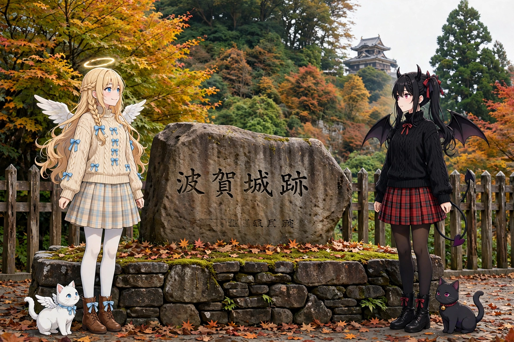
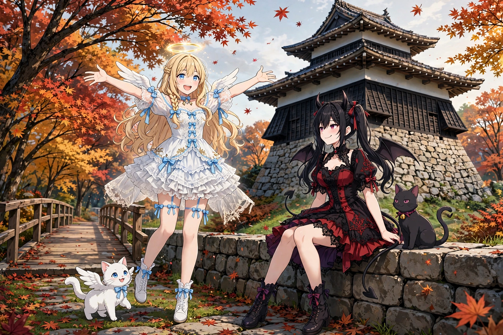
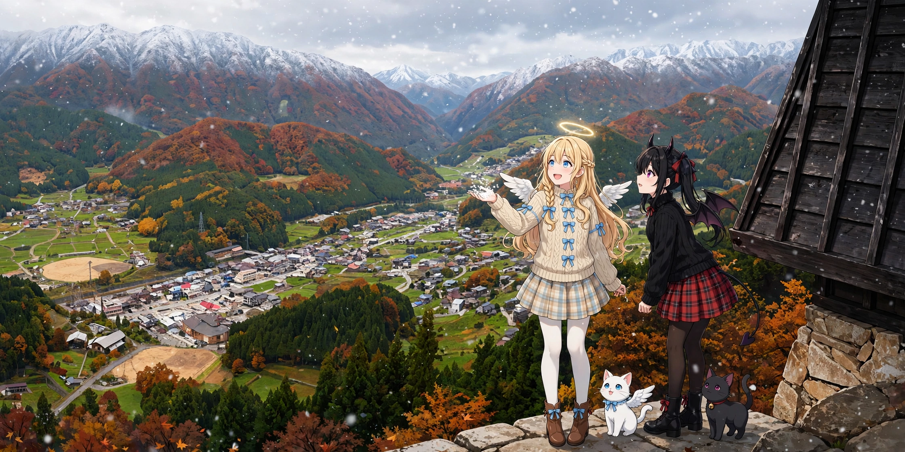
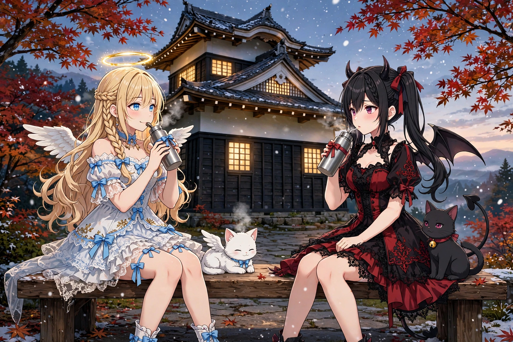

読み切り短編『紅葉と初雪の波賀城』を公開しました
2026年11月25日
読み切り短編『紅葉と初雪の波賀城』を公開しました。山城・波賀城跡へ登ったセラフィナとルチアが、紅葉と雪を同時に出会うお話です。
1. 紅葉の登り道

麓の入口には、大きな岩の石碑が立っていました。「波賀城跡」。その向こうの丘の上には、小さな二層櫓がちょこんと見えています。
「……なんで悪魔が、山なんか登らなきゃいけないのよ」
登り始めて十分、ルチアの文句は三回目でした。
今日の行き先は、山の上に残るお城の跡、波賀城跡。紅葉が見頃だと聞いて、わたしが誘ったのです。ルチアは「付き合ってあげるだけ」と言いながら、ちゃんと着いてきました。
山道は、紅葉のトンネルでした。頭の上も、足元も、真っ赤と橙色。落ち葉の絨毯がふかふかで、モコとノワールは葉っぱを蹴散らしながら先に行ったり戻ったりしています。
「ルチア、翼で飛ぶのは反則ですよ。登山は、足で登るものです」
「べ、別に飛ぼうとなんてしてないわよ！ ……ちょっと考えただけよ」
文句を言いながらも、ルチアの足取りは意外と軽いのでした。
2. 本丸跡の見晴らし

最後の石段を登りきると、視界がぱっと開けました。
苔むした石垣の上に、復元された二層櫓が建っていました。黒い板壁と白い壁の、小さいけれど立派なお城です。石垣の上に立つと、眼下に紅葉の山々がどこまでも広がっていました。
「見てくださいルチア！ 山が全部、燃えているみたいです」
「……まあ、悪くない景色ね」
石垣に腰かけて得意げにしているルチアですが、目はちゃんと輝いています。ノワールは石垣の上で丸くなり、モコはわたしの足元で得意げに胸を張っていました。一番小さいのに、一番先に着いた顔をしています。
山頂の風は冷たくて、頬が少し痛いくらい。それも含めて、登ってきたご褒美のようでした。
3. 秋と冬が会う場所

そのとき、空から白いものが舞ってきました。
「雪……？」
手のひらを出すと、小さな結晶がひとつ、ふわりと乗って、すぐ溶けました。見上げると、向こう側の高い山々は、もう真っ白に雪化粧をしています。手前は真っ赤な紅葉、向こうは白い雪山。そして頭の上からは、粉雪。
秋と冬が、同じ景色の中にいました。
「こんなの、ずるいわよ……」
ルチアがぽつりと言いました。
「綺麗なものは全部見せてくるんだから。……ねえセラフィナ、あんたの故郷じゃ、こんな景色ないでしょ」
「はい。天界には季節がありませんから。だから、地上はすごいんです。欲張りなくらい、全部見せてくれます」
雪は少しずつ強くなって、紅葉の上に薄く積もり始めました。赤と白の境目を、二人でしばらく黙って眺めていました。
4. 櫓の前で、ひと休み

下山の前に、櫓の前のベンチでひと休みしました。
雪が強くなってきたので、水筒の温かいお茶を分け合いました。櫓の窓には明かりが灯って、湯気の向こうでルチアがほっとした顔をしています。
「……悪魔は寒いのが苦手なのよ。本来はね」
「じゃあ、今日は特別でしたね。寒い場所で、綺麗なものが見られました」
「ふん。……まあ、誘ってくれて、ありがと。べ、別に、景色に礼を言ってるだけだから」
振り返ると、雪の山が夕日でほんのり桃色に染まっていました。モコとノワールは、もうベンチの上で丸くなっています。
秋と冬に同時に出会えた一日。欲張りな地上の贈り物を、今日も受け取りました。
今日もおつかれさまです。
（了）